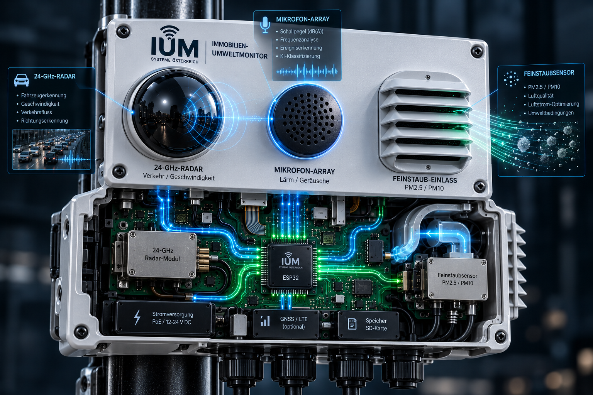

„Saubere Daten. Bessere Entscheidungen.“ – Der voll autonome Immobilien- und Umweltmonitor erfasst in Echtzeit alle relevanten Umwelt- und Verkehrsdaten direkt am Gebäude, um fundierte Entscheidungen für smarte Städte zu ermöglichen.
Ein Blick unter die Haube zeigt die präzise Hardware-Architektur unseres Überwachungssystems. Jedes Modul ist passgenau integriert, um maximale Zuverlässigkeit im Dauerbetrieb zu garantieren.

Im Zentrum des Gehäuses befindet sich eine eigens entworfene Hauptplatine (PCB) mit einem leistungsstarken ESP32-Mikrocontroller als zentralem Rechenherz. Dieser verarbeitet alle eintreffenden Messdaten direkt lokal vor Ort, verschlüsselt sie und leitet sie über moderne Schnittstellen (wie WLAN, LTE oder optional GNSS) an unser Web-Dashboard weiter.
Erfahre genau, welche Sensoren verbaut sind, was sie messen und wie sie zu einer besseren Umweltanalyse beitragen.
Das Radarsystem misst berührungslos und vollkommen datenschutzkonform die exakte Geschwindigkeit sowie die Frequenz vorbeifahrender Fahrzeuge. Es erkennt Muster im Verkehrsfluss und liefert präzise Kennzahlen zur Belastung direkt vor dem Objekt, ganz ohne Videoaufzeichnung von Personen.
Ein hochpräzises Mikrofon-Array erfasst kontinuierlich den Schalldruckpegel in Dezibel dB(A). Durch integrierte Frequenzanalysen können Lärmspitzen identifiziert, akustische Umwelt-Ereignisse klassifiziert und die reale Lärmbelastung für Anwohner messbar gemacht werden.
Über einen aerodynamisch optimierten Lamelleneinlass wird die Umgebungsluft analysiert. Mittels optischer Laserstreuung werden Partikelgrößen wie PM2.5 und PM10 in Echtzeit gemessen. Ergänzt durch Sensoren für Temperatur und Luftfeuchte entsteht ein komplettes Mikroklima-Profil.
Hinter IUM Systeme Österreich stehen ambitionierte Entwickler und Techniker der HTL Donaustadt.
Verantwortlich für die Gesamtkoordination, die strategische Planung der Diplomarbeit sowie die nahtlose Systemintegration und die übergeordnete Architektur der Web-Oberfläche und des Dashboards.
Verantwortlich für den Entwurf und die Bestückung der Hauptplatinen, die präzise Anbindung der Sensorik sowie das Energiemanagement und die physikalische Gehäusekonstruktion des Messmonitors.
Verantwortlich für die Programmierung des ESP32-Mikrocontrollers, die Auswertung der Rohdaten der Radar-, Lärm- und Feinstaubmodule sowie die sichere Datenübertragung an die Cloud-Infrastruktur.